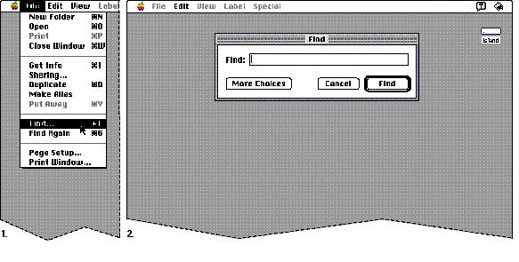
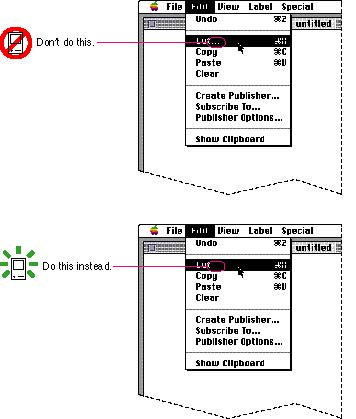
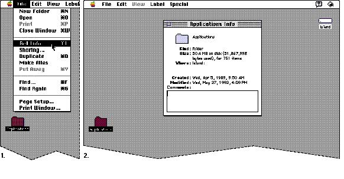
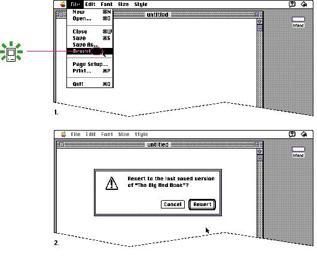

|
The Ellipsis Character in MenusThe ellipsis character (...) after a menu item means that the command needs more information from the user before the operation executes. To generate this character in your application's menus, type Option-; rather than three unspaced periods; the spacing is slightly different. The ellipsis character is often misused to indicate a wide variety of behaviors. The only time they should be used is to let the user know that a command will need more information to execute, as opposed to a command that executes immediately with no further information.This section contains several examples that demonstrate the correct and incorrect ways to use the ellipsis character in menus. The Find command in the Finder's File menu is an example of the correct presence of the ellipsis character. The command needs more information from the user about what to look for. The ellipsis character lets users know that they will have an opportunity to provide more information before the command executes. Figure 4-21 shows a menu item with the ellipsis character correctly used. Figure 4-21 The ellipsis character means more information is required  Don't
use an ellipsis character with a command that never
displays a dialog box asking for more information, but
executes immediately. This use definitely confuses the
meaning of the ellipsis character and makes the interface
unpredictable. When a user chooses a command and expects
to Figure 4-22 shows the incorrect use of the ellipsis character after a command that never displays a dialog box, and the menu as it should appear. Figure 4-22 Don't use the ellipsis character with a command that doesn't require more information  The ellipsis character doesn't simply mean that a dialog box or window will appear. For example in the Finder File menu, the Get Info command doesn't have an ellipsis character and shouldn't. When you select a Finder object and choose Get Info, a window appears displaying information about the object. The window appearing simply completes the command. The command doesn't require additional input from the user before it executes. Figure 4-23 shows the correct absence of the ellipsis character, even in the case where a window appears as the result of a command. Figure 4-23 The absence of the ellipsis character
means no more information  Don't use an ellipsis character if the command displays an alert box to warn the user of a potentially dangerous action, especially if the command displays an alert box only sometimes. In this case you are simply giving the user an opportunity to cancel a potentially dangerous action (such as causing a loss of data), not asking for more information. Figure 4-24 shows the correct absence of the ellipsis character with a command that displays an alert box. Figure 4-24 The ellipsis character doesn't mean an alert box appears  |